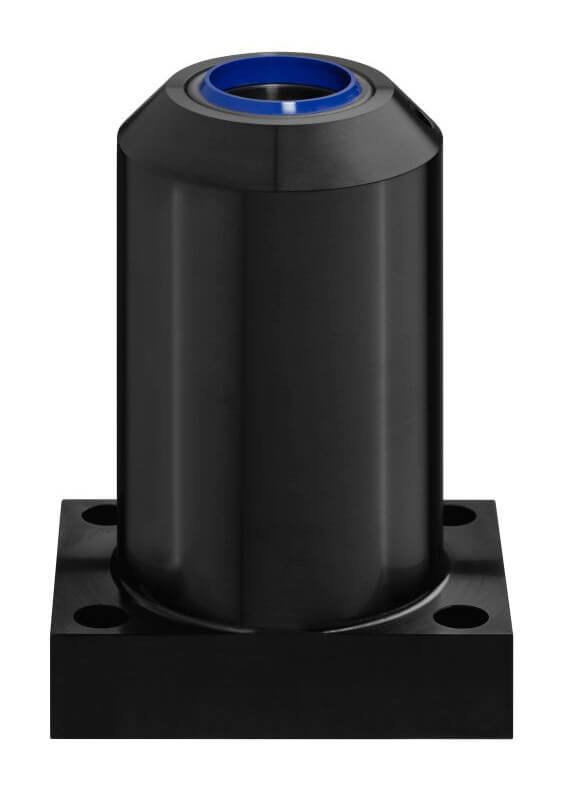
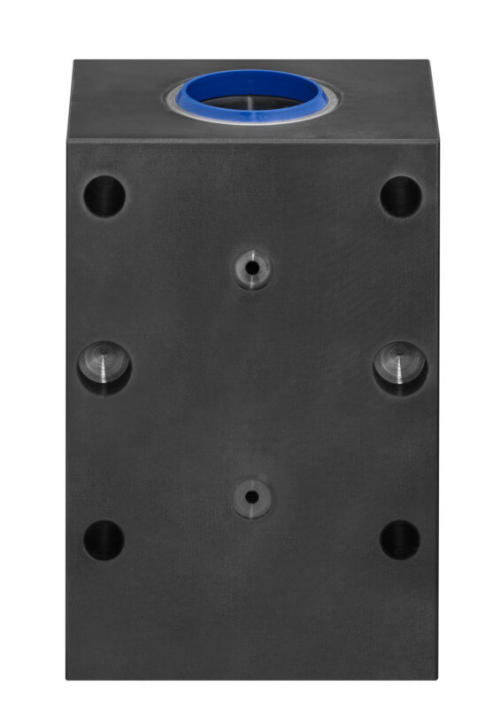
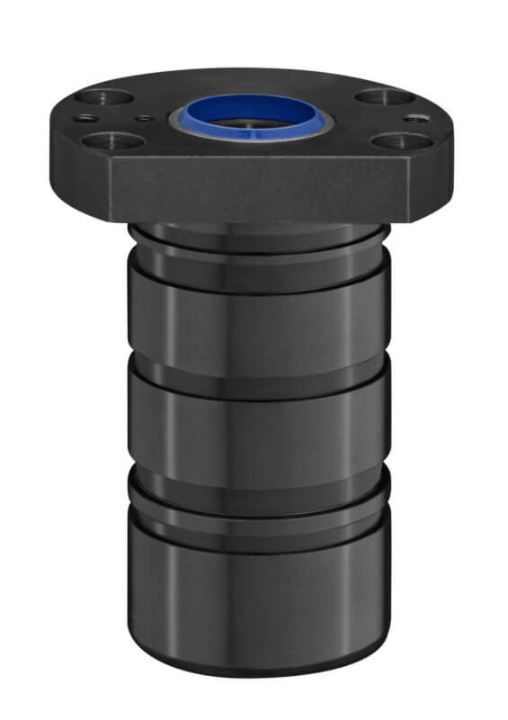
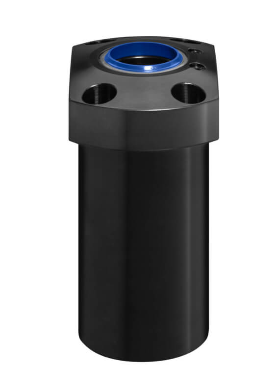

Zusätzlich bieten Micromat-Schwenkspanner ohne Schwenkhub bei der Überkopfbearbeitung ein integriertes Sicherheitssystem. Bei plötzlichem Druckabfall in der Hydraulik führt der Spanner seine Axialbewegung aus. Die mechanische Sperrung der Rotation verhindert das Aufdrehen des Zylinders und das Herausfallen des Werkstücks
Funktionsweise:
Wird der Schwenkspanner am Anschluss A mit Druck beaufschlagt, bewegt sich zunächst ein speziell genuteter Schwenkring nach unten und bewirkt dadurch eine Drehbewegung des Kolbens. Während dieser Drehbewegung ist der Kolben in axialer Richtung durch Stahlkugeln mechanisch blockiert. Sobald der Schwenkring seine Endposition erreicht hat und damit auch die Schwenkbewegung des Kolbens beendet ist, wird die Verriegelung aufgehoben – der Kolben kann nun seinen Spannhub nach unten ausführen. Beim Entspannen wird die Funktionsweise genau umgekehrt ausgeführt. Der Kolben fährt zunächst in axialer Richtung nach oben und schwenkt anschließend in seine Ausgangsposition zurück.
Baureihen



